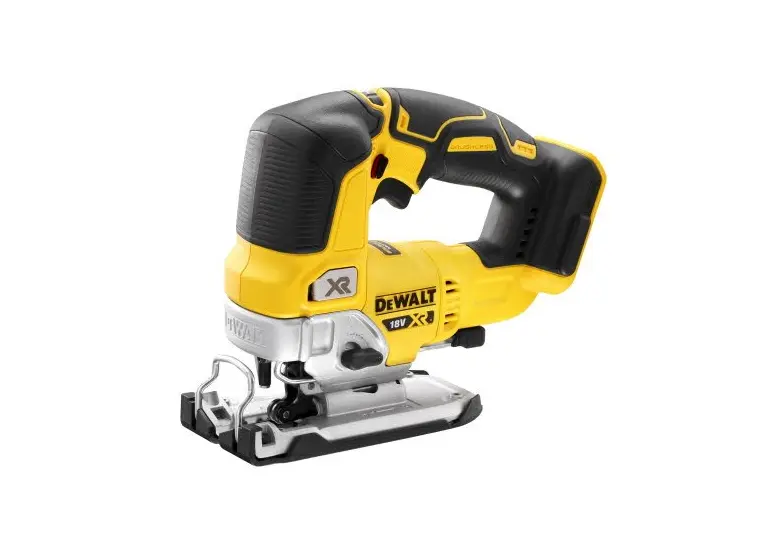

Wyrzynarka DeWALT DCS334
Wyrzynarka DeWALT DCS334 – płynna regulacja obrotów włącznikiem i pokrętłem, łatwa wymiana brzeszczotów, hamulec, cztery stopnie podrzynania, cięcie pod kątem, nadmuch na linie cięcia i możliwość odsysania urobku.



W zestawie: Narzędzie + 2x bateria z ładowarką + akcesoria
| DANE TECHNICZNE | |
|---|---|
| Napięcie akumulatora | 18V |
| Częstotliwość skoków na biegu jałowym | 0 - 3200 skoków/min |
| Skok brzeszczotu | 26mm |
| Ilość stopni podrzynania | 4 |
| Zakres nachylenia od/do | -45 / +45° |
| Głębokość cięcia w drewnie | 135mm |
| Głębokość cięcia w aluminium | 25mm |
| Głębokość cięcia w blasze stalowejy | 10mm |
| Wibracje przy cięciu drewna | 7m/s² |
| Wibracje przy cięciu stali | 5.1m/s² |
| Współczynnik niepewności pomiarowej K | 1.5m/s² |
| Poziom ciśnienia dźwięku | 84dB(A) |
| Poziom mocy akustycznej (LwA) | 95dB(A) |
| Współczynnik niepewności pomiarowej K | 3dB(A) |
| Długość całkowita | 277mm |
| Masa | 2.1kg |